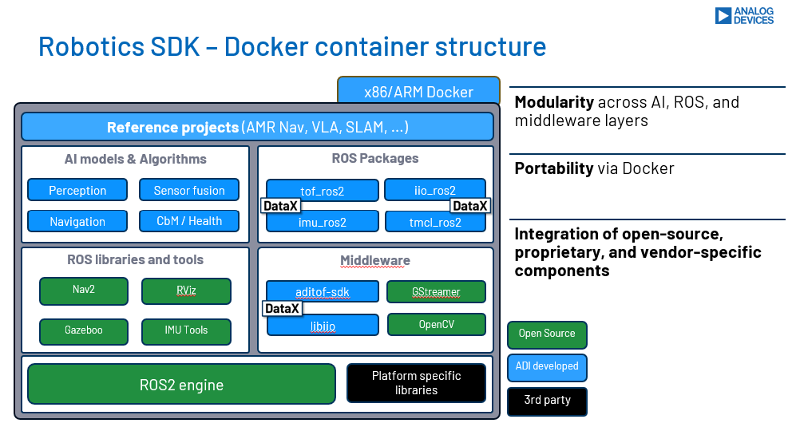

Introduction
ADI Robotics SDK?
The ADI Robotics SDK is a curated collection of ROS2 packages produced and maintained by Analog Devices Inc. It provides ROS2 drivers for ADI sensor and motor-controller hardware, 3D ToF perception algorithms, and the surrounding infrastructure needed to build and deploy containerized robotics applications.
The SDK is distributed as a set of Docker multi-stage images built from plain Dockerfiles using Docker Compose.

Architecture
The SDK is organized as a meta-repository (adi_ros2) that aggregates
individual ADI ROS2 package repositories as Git submodules:
adi_ros2/ ← meta-repository (this repo)
├── docker/
│ ├── Dockerfile ← standard images (amd64 + arm64)
│ └── Dockerfile.l4t ← NVIDIA Jetson images
├── compose.build.yml ← build images locally
├── compose.yml ← run nodes as Docker Compose services
├── .devcontainer/ ← VS Code devcontainer configuration
└── src/ ← Git submodules (one per package)
├── iio_ros2/
├── imu_ros2/
├── tmcl_ros2/
└── ...
Each package lives in its own repository with its own documentation and CI. The meta-repository ties them together into a unified build, development environment, and documentation site.
Docker Image Variants
Images are built as multi-stage Dockerfiles. Four variants are available, from a minimal runtime to a full desktop environment. See Supported Platforms for the complete list of variants, sizes, and platform-specific notes.
Included Packages
The SDK bundles drivers for IIO sensors, precision IMUs, Trinamic motor controllers, and 3D Time-of-Flight cameras. See Packages for the complete package list and API documentation links.
Supported Hardware
See Supported Hardware for the list of ADI evaluation boards and devices tested with the SDK.
Reference Applications
Todo
Landing page for Applications using the Robotics SDK.